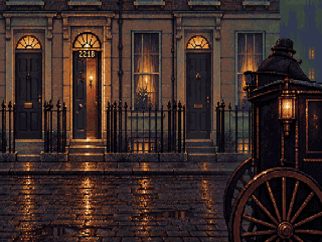

The selected right-cab composition, with a narrower pavement and warm light in all three fanlights. The driver gives an occasional small nod and puffs smoke from his pipe; the cab lantern flickers independently.

Native 320×200 with the fixed 64-colour palette. Existing Holmes and Watson masters use the same camera scale. These are art-study exports; the game registry remains unchanged.
Workflow and sources · Placement and animation timing · Blender guide · Pixelorama room · Driver poses · Lantern cels · Export checks · Earlier variants